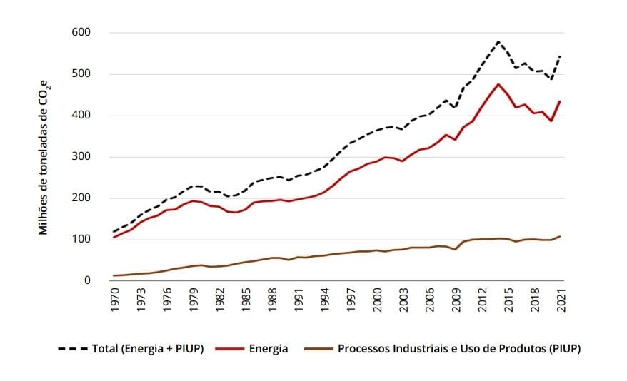

Transporte por Aplicativo e Sustentabilidade: Uma Análise das Pressões Planetárias
O aumento do transporte por aplicativo, impulsionado por plataformas como Uber, 99 e outros serviços de mobilidade urbana, transformou a forma como as pessoas se deslocam nas cidades.
No entanto, esse crescimento acelerado tem consequências diretas sobre o consumo de energia e as emissões de gases de efeito estufa (GEE), contribuindo para as chamadas pressões planetárias.
De acordo com dados do Sistema de Estimativas de Emissões de Gases de Efeito Estufa (SEEG, 2023), as emissões totais de CO₂ do setor energético brasileiro cresceram significativamente nas últimas décadas.
O gráfico abaixo mostra a evolução dessas emissões entre 1970 e 2021.

Impacto do transporte urbano nas emissões
A expansão do transporte por aplicativo trouxe benefícios de acessibilidade e conveniência, mas também aumentou o número de veículos circulando nas cidades.
Estudos mostram que parte considerável dos motoristas que aderem a essas plataformas não substituem o transporte público, mas aumentam o número total de quilômetros rodados — elevando o consumo de combustíveis fósseis.
Além disso, o tempo ocioso dos veículos em busca de passageiros e os retornos vazios contribuem para o aumento das emissões.
Segundo a Agência Internacional de Energia (IEA, 2022), o transporte urbano responde por mais de 25% das emissões globais de CO₂ relacionadas à energia.
Tecnologia e eficiência energética
O avanço da tecnologia pode, por outro lado, contribuir para a redução dos impactos ambientais.
Algumas iniciativas estão em curso:
- Incentivo ao uso de veículos elétricos e híbridos nas frotas de transporte por aplicativo;
- Desenvolvimento de algoritmos de roteamento inteligente, reduzindo distâncias percorridas sem passageiros;
- Integração entre aplicativos e transporte público, promovendo soluções multimodais e mais sustentáveis.
Essas medidas buscam diminuir as emissões por quilômetro rodado e melhorar a eficiência energética do setor.
No entanto, sua adoção ainda é desigual, especialmente em países em desenvolvimento.
Conexão entre transporte e pressões planetárias
As pressões planetárias referem-se aos impactos ambientais decorrentes das atividades humanas — especialmente aquelas que afetam o clima, a biodiversidade e os recursos naturais.
O aumento das emissões de gases de efeito estufa está diretamente ligado à intensificação dessas pressões, contribuindo para fenômenos como aquecimento global, desmatamento e queimadas.
No contexto brasileiro, o transporte urbano intensivo em combustíveis fósseis contribui não apenas para as emissões de CO₂, mas também para a expansão das fronteiras agrícolas e da infraestrutura viária, que pressionam ecossistemas sensíveis, como o Cerrado e a Amazônia.
Caminhos para um transporte sustentável
Para alinhar o transporte por aplicativo aos objetivos de sustentabilidade e aos limites planetários, é necessário:
- Ampliar o uso de energias renováveis na matriz veicular;
- Estimular a compartilhamento de viagens (carpooling);
- Integrar os aplicativos com redes de transporte público;
- Incentivar políticas de mobilidade urbana sustentável e redução do tráfego individual;
- Criar metas de neutralização de carbono para empresas do setor.
Essas ações podem reduzir as emissões, melhorar a qualidade do ar nas cidades e contribuir para um desenvolvimento humano que respeite os limites ecológicos do planeta.
Conclusão
O transporte por aplicativo representa um avanço na forma de mobilidade urbana, mas também traz desafios para a sustentabilidade.
Enquanto proporciona praticidade e inclusão social, amplia as emissões e pressões sobre os recursos naturais.
A transição para um modelo de transporte mais verde e eficiente depende do compromisso de empresas, governos e consumidores.
Com inovação tecnológica, planejamento urbano e consciência ambiental, é possível reduzir as pressões planetárias e garantir cidades mais equilibradas e sustentáveis.
Referências
- SEEG – Sistema de Estimativas de Emissões de Gases de Efeito Estufa (2023). Disponível em: https://seeg.eco.br
- IEA – World Energy Outlook 2022. Paris: International Energy Agency, 2022.
- PNUMA – Emissions Gap Report 2023. Nairobi: United Nations Environment Programme.
- UBER. Relatório de Sustentabilidade 2024. Disponível em: https://www.uber.com
- BRASIL. Plano Nacional de Mobilidade Urbana Sustentável. Ministério das Cidades, 2024.